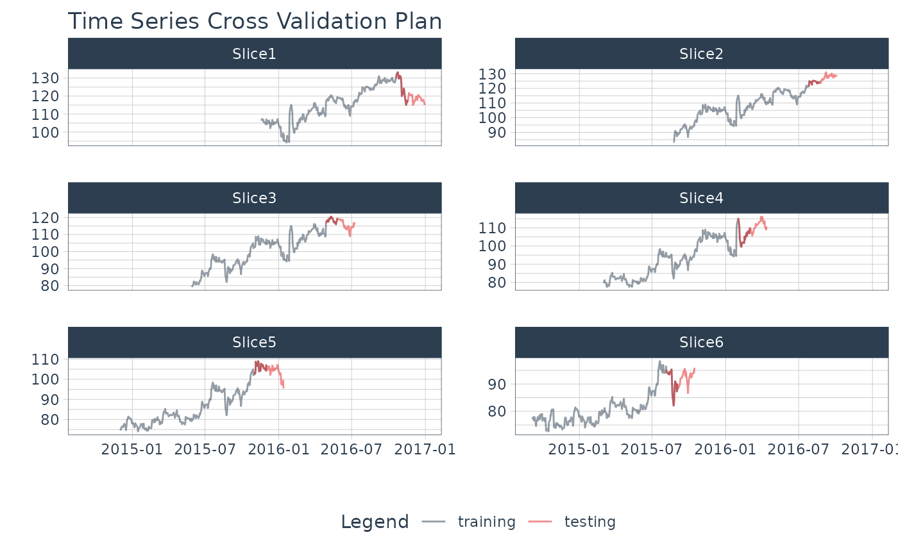

Visualize a Time Series Resample Plan
Source:R/rsample-plot_time_series_cv_plan.R
plot_time_series_cv_plan.RdThe plot_time_series_cv_plan() function provides a visualization
for a time series resample specification (rset) of either rolling_origin
or time_series_cv class.
Usage
plot_time_series_cv_plan(
.data,
.date_var,
.value,
...,
.smooth = FALSE,
.title = "Time Series Cross Validation Plan"
)Arguments
- .data
A time series resample specification of of either
rolling_originortime_series_cvclass or a data frame (tibble) that has been prepared usingtk_time_series_cv_plan().- .date_var
A column containing either date or date-time values
- .value
A column containing numeric values
- ...
Additional parameters passed to
plot_time_series()- .smooth
Logical - Whether or not to include a trendline smoother. Uses See
smooth_vec()to apply a LOESS smoother.- .title
Title for the plot
Value
Returns a static ggplot or interactive plotly object depending on
whether or not .interactive is FALSE or TRUE, respectively.
Details
Resample Set
A resample set is an output of the timetk::time_series_cv() function or the
rsample::rolling_origin() function.
See also
time_series_cv()andrsample::rolling_origin()- Functions used to create time series resample specfications.plot_time_series_cv_plan()- The plotting function used for visualizing the time series resample plan.
Examples
library(dplyr)
library(rsample)
FB_tbl <- FANG %>%
filter(symbol == "FB") %>%
select(symbol, date, adjusted)
resample_spec <- time_series_cv(
FB_tbl,
initial = "1 year",
assess = "6 weeks",
skip = "3 months",
lag = "1 month",
cumulative = FALSE,
slice_limit = 6
)
#> Using date_var: date
resample_spec %>% tk_time_series_cv_plan()
#> # A tibble: 1,812 × 5
#> .id .key symbol date adjusted
#> <chr> <fct> <chr> <date> <dbl>
#> 1 Slice1 training FB 2015-11-19 106.
#> 2 Slice1 training FB 2015-11-20 107.
#> 3 Slice1 training FB 2015-11-23 107.
#> 4 Slice1 training FB 2015-11-24 106.
#> 5 Slice1 training FB 2015-11-25 105.
#> 6 Slice1 training FB 2015-11-27 105.
#> 7 Slice1 training FB 2015-11-30 104.
#> 8 Slice1 training FB 2015-12-01 107.
#> 9 Slice1 training FB 2015-12-02 106.
#> 10 Slice1 training FB 2015-12-03 104.
#> # ℹ 1,802 more rows
resample_spec %>%
tk_time_series_cv_plan() %>%
plot_time_series_cv_plan(
date, adjusted, # date variable and value variable
# Additional arguments passed to plot_time_series(),
.facet_ncol = 2,
.line_alpha = 0.5,
.interactive = FALSE
)
